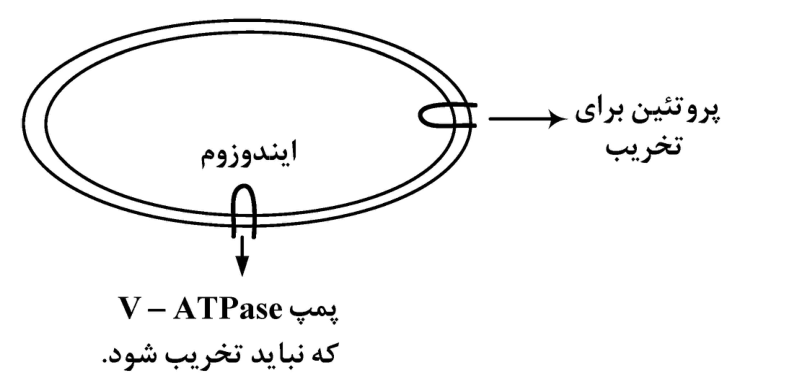

این جلد شامل ۶۰ سؤال واقعی منتخب از دفترچههای ۱۴۰۳، ۱۴۰۴ و ۱۴۰۵ مجموعه ۲۲۲۶ است؛ هر سال ۲۰ سؤال از بخش مشترک، سلولیمولکولی پیشرفته و بخش میکروبی انتخاب شده است. این گزیده بانک کامل سالهای ۱۳۹۵ تا ۱۴۰۵ نیست و فراوانی مباحث آن تخمین سهم آزمون آینده محسوب نمیشود. سؤالهای رشتههای دیگر وارد این انتخاب نشدهاند.
در هر سال ابتدا صورت و گزینهها با ترتیب دفترچه برای تمرین آمده و سپس پاسخ تشریحی مستقل ارائه میشود. شماره اصلی سؤال حفظ شده است. فایلهای تصویر در منبع قابل ویرایش و مخزن، شاهد رونویسیاند. فاصلهگذاری و شکل حروف یکدست شدهاند؛ بازنویسی مفهومی سؤال انجام نشده است.
گزیدهٔ موضوعی ۲۰ سؤال واقعی: ۸ سؤال از بخش مشترک، ۶ سؤال سلولیمولکولی و ۶ سؤال میکروبیولوژی. ترتیب سال و شماره و گزینههای دفترچه 687 C حفظ شده است؛ این گزیده بانک کامل سال یا تأیید کلید رسمی نیست. املاء و فاصلهگذاری یکدست شدهاند و مقدارهای عددی تغییر نکردهاند.
دفترچه: آزمون ورودی دورههای دکتری (نیمهمتمرکز) سال ۱۴۰۳، زیستشناسی سلولی و مولکولی؛ کد: 2226؛ کد کنترل 687 C؛ دفترچه شماره ۳ از ۳؛ تعداد صفحات PDF: ۴۸.
۱ — برای آنکه واکنش گرماگیر X → Y با ΔG = +۳٫۲۲ kJ/mol انجام پذیرد، این واکنش باید با کدامیک از واکنشهای زیر همراه شود؟
۶ — در یک رخداد زیستی کاملاً متعاون (Highly cooperative)، ...............
۷ — کدام آمینو اسید از نوع L-amino اسید نیست؟
۱۱ — کدام پروتئین در تغییر جهت حرکت تاژک نقش دارد؟
۱۳ — کدام ترکیب در دیواره آرکیها میتواند وجود داشته باشد؟
۱۸ — در تکثیر DNA دو پروتئین غیرآنزیمی، یعنی SSB و پروتئین گیره لغزنده (Sliding clamp) درگیر هستند. نقش این دو پروتئین چیست؟
۲۱ — کدام مورد عبارت زیر را بهدرستی کامل میکند؟ «پمپ سدیم پتاسیم با پمپکردن .......... یون سدیم به .......... سلول و پمپ .......... یون پتاسیم به .......... سلول باعث ایجاد بار .......... در داخل سلول میشود.»
۲۴ — دلیل ماندگاری و پیشروندگی (Processivity) DNA پلیمراز III نسبت به DNA پلیمرازهای I و II چیست؟
۳۶ — کدامیک توسط ریبوزومهای چسبیده به غشای شبکه آندوپلاسمی ساخته نمیشوند؟
۳۸ — اضافه کردن توالی Ser-Lys-Leu به انتهای کربوکسیل یک پروتئین معمولی سیتوزولی، آن را به داخل کدام اندامک هدایت میکند و گیرنده آن چیست؟
۴۲ — خانمهایی که فرم جهشیافته ژنهای BRCA1 و BRCA2 را به ارث میبرند، ۴۰ تا ۸۰ درصد زندگی خود را با ریسک سرطان سینه به سر میبرند. جهش در این ژنها با اختلال کدام پروسه سلولی باعث ناپایداری کروموزومی (Chromosome instability) میشود؟
۴۴ — کدام مورد، فقط فعالیت Reverse transcriptase دارد و فاقد LTR است؟
۴۶ — کدام نوع ژنهای کاذب، حاصل رونویسی معکوس است؟
۵۳ — کدامیک، در تنظیم درازمدت مسیر سیگنالی JAK–STAT دخیل است؟
۱۴۶ — کدام پروتئین در سلولهای باکتری و آرکیها، اسکلت سلولی سادهای تشکیل داده و نوارهای مارپیچیشکلی را دور تا دور سطح داخلی سلول در زیر غشا ایجاد مینماید؟
۱۴۷ — کدام سیستم ترشحی در باکتریهای گرم منفی، مسئول انتقال پروتئینهای تاخورده از فضای پریپلاسمی به بیرون از غشای خارجی است؟
۱۵۴ — ساختار نهایی برای به دام انداختن نور با شدت پایین باکتریهای گوگردی سبز، کدام است؟
۱۶۱ — ساختار سوپرکویل یا ابرمارپیچ DNA باکتریها، در طبیعت معمولاً به فرم مارپیچ .......... است که عدد آن تحت تأثیر .......... حاصل میشود.
۱۶۳ — در رابطه با سیستم ترمیمی SOS، کدام مورد انتخاب مناسبتری است؟
۱۶۹ — کدام کمپلکس پروتئینی زیر، در فرایند همانندسازی و رونویسی آنفلوانزا دخالت دارد؟
۱ — گزینه ۴. با فرض جفتشدن سازوکاری و جمعپذیری تغییرات انرژی آزاد در شرایط یکسان، تنها گزینهٔ ۴ مجموع منفی میدهد: ۳٫۲۲ − ۵٫۷۱ = −۲٫۴۹ کیلوژول بر مول. گزینهٔ ۱ مجموع را مثبت نگه میدارد و گزینههای ۲ و ۳ آن را مثبتتر میکنند. صرف همزمانی دو واکنش کافی نیست؛ واسطه یا سازوکار مشترک لازم است. عبارت «گرماگیر» در صورت سؤال دقیقاً هممعنی ΔG مثبت نیست: علامت ΔH به تبادل گرما و علامت ΔG به مساعدبودن ترمودینامیکی مربوط است. محاسبهٔ آموزشی بر مقدار ΔG دادهشده تکیه دارد.
۶ — گزینه ۳. در حد همکاری مثبتِ بسیار شدید، رویدادهای بههموابسته پاسخی تند و نزدیک به همهیاهیچ میسازند؛ بنابراین گزینهٔ ۳ توصیف موردنظر است. استقلال رویدادها در گزینههای ۱، ۲ و ۴ با علت «تعاون» سازگار نیست. از نظر دقیق، همکاری معمولی الزاماً همهیاهیچ مطلق نیست و منحنی سیگموئیدی نیز بهتنهایی سازوکار همکاری زیرواحدها را ثابت نمیکند؛ آبشارهای تنظیمی یا اشباع آنزیمی هم میتوانند پاسخ فراحساس بسازند. کلمهٔ «کاملاً» حد ایدئال مطرحشده در سؤال را مشخص میکند.
۷ — گزینه ۲. گلیسین در کربن آلفا دو هیدروژن یکسان دارد و مرکز کایرال ندارد؛ بنابراین در دستهٔ L یا D قرار نمیگیرد. سه اسید آمینهٔ دیگر در شکل معمولِ مورد استفاده در پروتئینسازی، ایزومر L دارند. نکتهٔ استنباطی این است که «از نوع L نیست» در اینجا به معنی Dبودن نیست؛ پاسخ، مولکول بیکایرال است. نسبتدادن Lبودن به همهٔ اسیدهای آمینه بدون استثنای گلیسین خطای رایج است.
۱۱ — گزینه ۳. CheY پیام تنظیمی را به مجموعهٔ سوئیچ موتور تاژک میرساند و اتصال شکل فعال آن به اجزای سوئیچ، احتمال تغییر جهت چرخش را عوض میکند؛ گزینهٔ ۳ مستقیمترین پاسخ است. CheA هیستیدینکیناز مسیر است، CheB در سازگاری گیرندهها و برداشت گروه متیل نقش دارد و CheZ دفسفریلاسیون CheY را تسریع میکند. پس سایر پروتئینها بر رفتار حرکتی اثر دارند، اما افکتور مستقیمِ سوئیچ در میان گزینهها CheY است. ویژگیهای دقیق چرخش و اصلاح CheY به گونه و شرایط وابستهاند.
۱۳ — گزینه ۲. در سودومورئینِ برخی آرکیها، N-استیلگلوکزآمین وجود دارد؛ ازاینرو گزینهٔ ۲ درست است. مورامیک اسیدِ پپتیدوگلیکان باکتریایی با قند دیگری جایگزین میشود و پیوند قندی و ترکیب پپتیدی نیز متفاوتاند. LPS ویژگی غشای خارجی باکتریهای گرممنفی است و آمینواسیدهای D در گزینهٔ ۳ به الگوی پپتیدوگلیکان باکتریایی اشاره دارند. همهٔ آرکیها سودومورئین ندارند؛ لایههای پروتئینی/گلیکوپروتئینی و حتی فقدان دیواره نیز دیده میشود. واژهٔ «میتواند» مانع تعمیم نادرست به کل دامنهٔ آرکی میشود.
۱۸ — گزینه ۳. SSB به DNA تکرشتهای متصل میشود و بازجفتشدن یا ساختارهای ثانویهٔ نامناسب را محدود میکند. گیرهٔ لغزنده پلیمراز را روی DNA نگه میدارد و فرایندپذیری، یعنی تعداد نوکلئوتیدهای افزودهشده پیش از جداشدن آنزیم، را بالا میبرد. گزینهٔ ۳ هر دو نقش را به ترتیب پوشش میدهد. انتخاب نوکلئوتید در گزینهٔ ۱ و ویرایش خطا در گزینهٔ ۲ عمدتاً کار بخشهای کاتالیتیک پلیمراز و مسیرهای ترمیماند. گزینهٔ ۴ توصیفی کلی است و کار SSB را مشخص نمیکند؛ حضور این عوامل تضمین مطلقِ پایان همانندسازی هم نیست.
۲۱ — گزینه ۴. در هر چرخهٔ معمولِ Na⁺/K⁺-ATPase، سه یون سدیم خارج و دو یون پتاسیم وارد میشود؛ یک بار مثبت خالص از سلول خارج میگردد. بنابراین سهم الکتروژنیک پمپ، منفیترکردن داخل است و گزینهٔ ۴ درست است. گزینههای ۱ و ۳ نسبت استوکیومتری را نادرست میدهند و گزینهٔ ۲ جهت جابهجایی را وارونه کرده است. پتانسیل استراحت فقط محصول مستقیم این پمپ نیست؛ نفوذپذیری انتخابی کانالها و گرادیانهای یونی نیز دخالت دارند. عبارت سؤال را نباید به انحصاریبودن نقش پمپ تعبیر کرد.
۲۴ — گزینه ۳. گیرهٔ β به شکل حلقه DNA را دربر میگیرد و به پلیمراز همانندساز اتصال پایدار میدهد؛ این اتصال از جداشدن زودرس آنزیم جلوگیری میکند و گزینهٔ ۳ را توضیح میدهد. مارپیچ آلفا، صفحهٔ بتا و موتیف helix–loop–helix در گزینههای دیگر اجزای عمومی ساختار پروتئیناند و بهتنهایی سازوکار فرایندپذیری بالای هولوآنزیم Pol III را مشخص نمیکنند. فرایندپذیری را با سرعت کاتالیز یا دقت یکسان نگیرید؛ افزایش زمان ماندن روی DNA الزاماً به معنی افزایش همان اندازه در سرعت هر اتصال نوکلئوتید نیست.
۳۶ — گزینه ۱. پروتئینهای محیطیِ سطح سیتوزولی غشای پلاسمایی در الگوی معمول از سیتوزول به غشا میرسند و در لومن مسیر ترشحی ساخته نمیشوند؛ گزینهٔ ۱ پاسخ است. پروتئینهای متصل به GPI ابتدا وارد شبکه آندوپلاسمی میشوند، GPI به انتهای کربوکسیل آنها متصل و سپس در مسیر ترشحی پردازش میشود. پروتئینهای ترشحی ماتریکس و آنزیمهای لومن واکوئل نیز از مسیر ER/گلژی عبور میکنند. تمایز تعیینکننده، «سمت سیتوزولی» در برابر لومن/سمت غیرسیتوزولی غشاست، نه صرفِ حضور نهایی پروتئین روی یک غشا.
۳۸ — گزینه ۳. سهتایی انتهایی SKL الگوی کلاسیک PTS1 است و توسط دامنهٔ TPR گیرندهٔ PEX5 شناسایی میشود؛ بنابراین گزینهٔ ۳ درست است. جایگاه آن در انتهای کربوکسیل برای شناسایی اهمیت دارد و وجود همان حروف در میانهٔ زنجیره الزاماً کافی نیست. سیگنال ورود میتوکندری معمولاً از نظر جایگاه و ساختمان متفاوت است؛ SRP سیگنال ورود به مسیر ER را شناسایی میکند و ایمپورتینها سیگنالهای ورود هستهای را میشناسند. Hsp70 نیز در زمینههای مختلف شاپرون است و گیرندهٔ اختصاصیِ SKL نیست.
۴۲ — گزینه ۲. BRCA1 و BRCA2 در مراحل متفاوت ترمیم شکستهای دورشتهای DNA به روش نوترکیبی همولوگ نقش دارند؛ BRCA2 به بارگذاری/عملکرد RAD51 کمک میکند. پس گزینهٔ ۲ پاسخ علمی است. عدمانطباقِ بازی عمدتاً با MMR، آسیبهای کوچک بازها با BER و برخی اصلاحات شیمیایی با ترمیم مستقیم برطرف میشوند؛ هیچیک توصیف اصلی نقص BRCA نیست. تصویر کلید واسط برای این شماره گزینهٔ ۱ را نشان میدهد؛ این اختلاف آشکارا حفظ شده است و پاسخ آن تصویر جای تحلیل علمی را نمیگیرد. درصدهای بالینیِ مندرج در صورت، متن آزموناند و برآورد فردی یا همگانی خطر محسوب نمیشوند.
۴۴ — گزینه ۳. LINEها، از جمله LINE-1، رتروترانسپوزونهای غیرLTR هستند و برای ساخت نسخهٔ DNA از RNA از رونویسی معکوس استفاده میکنند؛ در میان گزینهها شمارهٔ ۳ مقصود سؤال است. Ty و Copia از الگوهای رتروترانسپوزون LTRدارند و رتروویروس نیز در DNA پروویروسی LTR دارد. عبارت «فقط فعالیت Reverse transcriptase» سادهسازی است و نباید به نبود سایر فعالیتهای آنزیمی LINE-1 تعبیر شود: ORF2 علاوه بر رونویسی معکوس، اندونوکلئاز نیز دارد. تمایز آزمونی قابل اتکا در این سؤال، داشتن یا نداشتن LTR است.
۴۶ — گزینه ۳. ژن کاذب پردازششده از RNA پیامرسانی منشأ میگیرد که به DNA رونویسی معکوس شده و در ژنوم جای گرفته است؛ بنابراین گزینهٔ ۳ درست است. فقدان بیشتر اینترونها، بقایای دنبالهٔ پلیآ و تکرارهای جایگاه هدف از شواهد رایج این منشأ هستند. ژن کاذب ناشی از تکثیر DNA میتواند ساختار اینترونی ژن مبدأ را حفظ کند و نوع unitary به غیرفعالشدن ژن بدون ایجاد یک نسخهٔ تکثیری جدید اشاره دارد. «ژن کاذب» لزوماً به معنی نبود هر نوع رونویسی یا اثر تنظیمی نیست؛ منشأ تکوینی و فعالیت فعلی دو پرسش مستقلاند.
۵۳ — گزینه ۳. SOCSها از تنظیمکنندههای منفی مسیرند و بیان ژن آنها میتواند پس از فعالشدن STAT افزایش یابد؛ محصول تازهساختهشده سیگنال را مهار میکند و حلقهٔ بازخورد منفیِ وابسته به بیان را شکل میدهد. این منطق گزینهٔ ۳ را برای تنظیم دیررس توضیح میدهد. SHP1 نیز میتواند با دفسفریلاسیون، سیگنال را کم کند، اما در این مقایسه سازوکار سریعترِ فسفاتازی است. SOS عامل تعویض نوکلئوتید گوانینی در مسیر Ras و STAT5 از انتقالدهندگان پیام است. «درازمدت» را نباید به همهٔ اثرهای یک پروتئین یا زمان ثابت و یکسان در همهٔ سلولها تعمیم داد.
۱۴۶ — گزینه ۲. در بیان کلاسیکِ کتابهای میکروبیولوژی، MreB همتای اکتین و مرتبط با حفظ شکل میلهای و سازماندهی ساخت دیواره است؛ ازاینرو گزینهٔ ۲ هدف سؤال است. FtsZ بیشتر حلقهٔ تقسیم، ZipA اتصال مجموعهٔ تقسیم به غشا و MinD جایگذاری دستگاه تقسیم را تداعی میکنند. بااینحال، تصویر «نوار مارپیچی بلند و پیوسته» برای MreB طبیعیِ E. coli تعمیم قابل اتکا نیست: بررسی کرایوتوموگرافی نشان داده است بعضی مارپیچهای مشاهدهشده مصنوعِ برچسب N-انتهایی YFP بودند. همچنین این صورت نباید وجود یک دستگاه یکسان MreB را در همهٔ باکتریها و آرکیها القا کند. پاسخِ هدفِ آزمون با تصحیح علمیِ محدودیت صورت ارائه میشود.
۱۴۷ — گزینه ۱. سیستم ترشحی نوع II پروتئینهای تاخوردهٔ پریپلاسم را از غشای خارجی عبور میدهد؛ پس گزینهٔ ۱ مناسب است. ورود اولیهٔ این سوبستراها از سیتوزول به پریپلاسم مرحلهای جداست و میتواند با Sec یا Tat انجام شود. Tat عموماً عبور پروتئین تاخورده از غشای سیتوپلاسمی را انجام میدهد، بنابراین در این صورت که مبدأ پریپلاسم و مانع غشای خارجی است پاسخ نیست. سیستم IV مجموعهای با منطق انتقال متفاوت است و نوع V از سازوکار اتوترانسپورتر/سامانههای وابسته استفاده میکند؛ توصیف کلاسیکِ خروج پروتئین تاخورده از پریپلاسم در این سؤال به T2SS اشاره دارد.
۱۵۴ — گزینه ۴. کلروزوم آنتنی بزرگ و بسیار کارآمد برای برداشت نور در باکتریهای گوگردی سبز است و رشد در شدتهای بسیار کم نور را ممکن میکند؛ گزینهٔ ۴ درست است. انرژی برانگیختگی از رنگیزههای انباشته در آن از راه اجزای رابط به مرکز واکنش میرسد. کربوکسیزوم با تغلیظ کربن/روبیسکو مرتبط است، فیکوبیلیزوم آنتن گروههایی مانند سیانوباکتریهاست و تیلاکوئید نام سامانهٔ غشایی فتوسنتزی است. این سه نام را نباید صرفاً به سبب ارتباط با فتوسنتز جایگزین آنتن ویژهٔ مطرحشده در سؤال کرد.
۱۶۱ — گزینه ۴. برای DNA کروموزومی بسیاری از باکتریهای مدل، ابرپیچش خالص معمولاً منفی است. مقدار تعادلی آن با فعالیتهای مخالفِ واردکردن ابرپیچش منفی توسط ژیرازِ نوع II و برداشت ابرپیچش منفی توسط توپوایزومراز I، همراه با تنظیم و فعالیتهای دیگر سلول، کنترل میشود؛ بنابراین با تأکید صورت بر «عدد آن»، گزینهٔ ۴ کاملتر است. گزینهٔ ۱ عامل ایجاد ابرپیچش منفی را میشناسد اما همایستایی مقدار آن را بهتنهایی توضیح نمیدهد. گزینههای ۲ و ۳ علامت معمول را نادرست میدهند. نوع و جهت ابرپیچش را به همهٔ پروکاریوتها، بهویژه آرکیهای گرمادوست، تعمیم ندهید؛ همهٔ توپوایزومرازهای نوع I و II نیز عملکرد یکسان ندارند.
۱۶۳ — گزینه ۴. LexA سرکوبگر ژنهای پاسخ SOS است. تجمع DNA تکرشتهای و فعالشدن RecA میتواند خودبُری LexA و برداشتهشدن سرکوب را تسهیل کند؛ بنابراین گزینهٔ ۴ پاسخ روشن است. SOS پاسخ به آسیب و اختلال همانندسازی است، نه صرف وقوع یک جهش نقطهای تثبیتشده؛ گزینهٔ ۳ محرک را اشتباه میگیرد. برخی اجزای SOS ترمیم دقیق دارند، اما بخش گذر از آسیب میتواند جهشزا باشد، پس گزینهٔ ۱ ویژگی کل سامانه نیست. نیاز مطلق به الگوی سالم در گزینهٔ ۲ نیز توصیف همهٔ عملکردهای این پاسخ نیست. آسیب DNA، فعالشدن پاسخ و تثبیت جهش سه مرحلهٔ متفاوتاند.
۱۶۹ — گزینه ۳. پلیمراز RNAوابستهبهRNA آنفلوانزا از PB1، PB2 و PA ساخته میشود و در قالب ریبونوکلئوپروتئین ویروسی رونویسی و همانندسازی را انجام میدهد؛ گزینهٔ ۳ درست است. PB1 هستهٔ کاتالیتیک، PB2 مرتبط با شناسایی کلاهک و PA دارای دامنهٔ اندونوکلئازی در برداشت کلاهک است. HA و NA بیشتر در اتصال/ورود و رهاسازی و M1 و M2 در ساختار، مونتاژ یا فرایندهای وابسته به ورود نقش دارند؛ جایگزینی NA به جای PA در گزینهٔ ۴ کمپلکس پلیمراز را ناقص میکند. این توضیح دربارهٔ نقشهای مولکولی است و نقش غیرمستقیم سایر پروتئینها در تکثیر کلی ویروس را نفی نمیکند.
گزیده آموزشی ۲۰ سؤال متنی از دفترچه واقعی سال ۱۴۰۴: ۸ سؤال بخش مشترک ۱ تا ۲۵، ۶ سؤال سلولی و مولکولی پیشرفته ۲۶ تا ۵۵ و ۶ سؤال بخش میکروارگانیسمها و ویروسشناسی ۱۳۶ تا ۱۷۵. گزینش موضوعی است، نه بانک کامل دفترچه یا نماینده آماری فراوانی سؤال. ترتیب گزینهها حفظ و تنها فاصلهگذاری و شکل نوشتاری اصطلاحات یکدست شده است. پاسخها تألیف آموزشی مستقلاند. اختلاف سؤال ۵ با کلید بازنشرشده آشکار نگه داشته شده است.
دفترچه: آزمون ورودی دورههای دکتری (نیمهمتمرکز) سال ۱۴۰۴ — زیستشناسی سلولی و مولکولی (کد ۲۲۲۶)، دفترچه شماره ۳ از ۳؛ کد: 887A؛ تعداد صفحات PDF: ۴۸.
۱ — برای حذف پیوندهای دیسولفیدی موجود در پروتئین، جهت تعیین توالی پروتئین، از کدام ترکیب استفاده میشود؟
۳ — سوکسینیل کوآ با کدامیک از اسیدهای آمینه و کوآنزیمهای زیر میتواند اسید دلتا آمینولولینیک ایجاد کند؟
۵ — اگر ΔG یک واکنش منفی باشد و آنتروپی نیز در جریان آن افزایش یابد، آن چه واکنشی است؟
۸ — وجود کدام توالی، در بخشی از پروتئینی که ساختار مارپیچ آلفا دارد و در داخل غشای پلاسمایی قرار میگیرد، محتملتر است؟
۱۹ — miRNAها، از کدام طریق میتوانند خاموشسازی ژنها را انجام دهند؟
۲۲ — در اتصالات کانونی (Focal adhesion)، خوشههای بزرگی از اینتگرینها، به کدامیک از اجزای زیر از طریق انواع مختلفی از آداپتورها متصل میشوند؟
۲۳ — «گاهی اوقات یک آنزیم توسط یک گیرنده فعال میشود و با تولید پیامرسان دوم، پاسخ سلولی را ایجاد میکند». نام این آنزیم کدام است؟
۲۵ — در کدام شرایط، احتمال دارد که سلولهای توموری پس از آسیب به DNA دچار آپوپتوز شوند؟
۴۳ — کدام مورد، از طریق کنترل فرایند ترانسپوزیشن، مانع از تغییر یا غیرفعال شدن بیان ژنها میشود؟
۴۴ — در یوکاریوتها، کدام فاکتور نقش EF-G پروکاریوتی را در سنتز پروتئینها ایفا میکند؟
۴۵ — کدامیک از آنزیمهای زیر، دارای فعالیت پریمازی است؟
۵۱ — اتصال Arestin به سطح سیتوزولی گیرندههای GPCR، از کدام مورد جلوگیری میکند؟
۵۲ — در فرایند پیامرسانی، کدام اسیدآمینهها توسط پروتئین کینازها فسفریله میشوند؟
۵۳ — کدام عامل شناختهشده توسط سلولهای اندوتلیالی، باعث میشود که سلولهای عضلانی صاف در دیواره رگها شل شوند؟
۱۳۸ — مفهوم «الیگوتروفی» در باکتریها، به چه معنی است؟
۱۳۹ — کدام مورد، به تشعشع مقاومتر است؟
۱۵۹ — کدام، درخصوص متانوژنز درست است؟
۱۶۴ — پروتئینهای کدام گروه از ژنهای زیر، بهطور منظم برای فعالیت سلولی مورد نیاز است؟
۱۶۵ — کدام پروتئین، در عفونت HIV در فرایند انتقال mRNA به سیتوپلاسم ایفای نقش میکند؟
۱۶۷ — ژنوم خالص کدام ویروسها، عفونی است؟
۱ — گزینه ۱. گزینه ۱. DTT عامل احیاکننده است و پیوند S–S سیستین را به گروههای تیول تبدیل میکند؛ به این ترتیب زنجیرههایی که با دیسولفید متصلاند از هم باز میشوند. SDS شوینده یونی و دناتورهکننده است، اما بهخودیخود احیاکننده دیسولفید نیست. تریتون و توئین شویندههای غیریونیاند و برهمکنش با غشا یا حلالیت را تغییر میدهند. بنابراین دناتوراسیون و احیای کووالانسی را نباید یکی دانست.
۳ — گزینه ۱. گزینه ۱. در مسیر وابسته به ALA synthase، گلیسین با سوکسینیلکوآ واکنش میدهد و ۵-آمینولولینات همراه CO₂ و CoA تشکیل میشود. کوآنزیم آنزیم PLP است؛ TPP کوآنزیم این واکنش نیست و هیستیدین نیز جایگزین گلیسین نمیشود. این سازوکار به همه جانداران تعمیم ندارد: گیاهان، آرکیها و بسیاری باکتریها ALA را از مسیر گلوتامات میسازند. سؤال مشخصاً واکنش آغازشونده از سوکسینیلکوآ را هدف گرفته است.
۵ — گزینه ۲. پاسخ آموزشی گزینه ۲ است؛ این پاسخ با کلید بازنشرشده اختلاف دارد. ΔG منفی یعنی در جهت نوشتهشده انرژی آزاد قابل استفاده آزاد میشود و واکنش exergonic یا انرژیزا است. شرط افزایش آنتروپی این نتیجه را نقض نمیکند. در تعادل ΔG خالص صفر است، و نام آنابولیک را نمیتوان از این دو داده نتیجه گرفت. «خودبهخودی» نیز به معنی سریع بودن واکنش نیست. تصویر کلید آرشیوشده برای سؤال ۵ گزینه ۱ را نشان میدهد؛ این اختلاف بدون سند رسمی رفعشده تلقی نمیشود.
۸ — گزینه ۲. گزینه ۲ از باقی توالیها برای بخش مارپیچی در محیط آبگریز غشا مناسبتر است، زیرا عمدتاً از باقیماندههای غیرقطبی تشکیل شده است. توالی ۱ چند گروه باردار دارد و توالی ۴ بهشدت بازی و باردار است. گزینه ۳ علاوه بر کوتاه بودن دارای دو پرولین است که در مقایسه با گزینه ۲ سازگاری کمتری با مارپیچ آلفای ممتد دارد. این توالیهای کوتاه برای اثبات یک قطعه کامل گذرنده از غشا کافی نیستند؛ سؤال مقایسه احتمال در بخشی از قطعه را میپرسد.
۱۹ — گزینه ۲. گزینه ۲ جامعترین پاسخ است. miRNA در مجموعه خاموشسازی وابسته به RNA، پیام هدف را از راه مکملشدن توالی شناسایی میکند و میتواند کارایی ترجمه را کم کند یا ناپایداری و تخریب mRNA را افزایش دهد. گزینه ۴ فقط یکی از سرنوشتهای ممکن را بیان میکند. گزینههای ۱ و ۳ در این پرسش سازوکار معمول پسارونویسی miRNA را با خاموشسازی رونویسی خلط میکنند؛ نباید همه گونههای RNA کوچک و همه زمینههای زیستی را یکسان فرض کرد.
۲۲ — گزینه ۱. گزینه ۱. اینتگرینهای اتصال کانونی از طریق پروتئینهایی مانند تالین و وینکولین به رشتههای اکتین متصل میشوند و انتقال نیرو و پیام سلول–ماتریکس را ممکن میکنند. توبولین جزء میکروتوبول است، و پروتئین بند ۳ نام آداپتور اصلی اتصال کانونی نیست. اتصال به رشتههای بینابینی بیشتر با همیدسموزومها و اینتگرینهای ویژه آن مطرح است؛ تفاوت نوع اتصال، گزینه ۴ را از اتصال کانونی جدا میکند.
۲۳ — گزینه ۲. گزینه ۲. در این نامگذاری، آنزیم افکتور مانند آدنیلیل سیکلاز، در پاییندست گیرنده و پروتئین G پیامرسان دوم تولید میکند. Activator نام کلی عامل فعالکننده است و نقش مشخص آنزیم تولیدکننده پیامرسان دوم را نامگذاری نمیکند. دو عنوان دیگر اصطلاح استاندارد این جزء مسیر نیستند. گیرنده، پروتئین انتقالدهنده پیام و افکتور ممکن است اجزای جداگانه باشند؛ بنابراین پاسخ به معنای آنزیمی بودن همه گیرندهها نیست.
۲۵ — گزینه ۴. گزینه ۴. p53 سالم و فعال میتواند در پاسخ به آسیب DNA، توقف چرخه و ترمیم را القا کند و اگر آسیب قابل رفع نباشد مسیر مرگ برنامهریزیشده را تقویت کند. Rb بیشتر مهار گذار چرخه سلولی را بر عهده دارد و فعال بودن آن بهتنهایی شاهد آغاز آپوپتوز نیست. غیرفعال شدن Bax که عامل پیشبرنده آپوپتوز است، انتظار ایجاد مرگ را تقویت نمیکند. در یک سلول واقعی، فعال بودن p53 تضمین قطعی مرگ نیست و به سلامت اجزای پاییندست نیز وابسته است؛ عبارت «احتمال دارد» با این محدودیت سازگار است.
۴۳ — گزینه ۲. گزینه ۲. piRNA با پروتئینهای PIWI در مهار عناصر متحرک، بهویژه در دودمان زایشی جانوران، نقش شناختهشده دارد. این دفاع هم میتواند از راه تخریب RNA عنصر و هم خاموشسازی کروماتینی رونویسی آن انجام شود. eRNA معمولاً با فعالیت عناصر افزاینده مرتبط است؛ 7SL جزء RNA ذره شناسایی پیام و 7SK تنظیمکننده طویلشدن رونویسی است. نقش piRNA را نباید به همه سلولهای پیکری و همه جانداران به یک صورت تعمیم داد.
۴۴ — گزینه ۳. گزینه ۳. EF-G در باکتری و همتای یوکاریوتی آن eEF2، با چرخه GTP در جابهجایی ریبوزوم و مجموعه tRNA–mRNA طی طویلشدن ترجمه نقش دارند. eEF1α بیشتر با تحویل آمینواسیل-tRNA به جایگاه A مقایسه میشود و eEF1βγ در بازیافت نوکلئوتید eEF1A دخیل است. EF3 فاکتوری با توزیع محدود، بهویژه در قارچها، است و جایگزین عمومی eEF2 در یوکاریوتها نیست.
۴۵ — گزینه ۴. گزینه ۴ با تعبیر دقیق «کمپلکس Pol α–primase» صحیح است. این کمپلکس یوکاریوتی زیرواحدهای پریماز برای آغاز RNA و زیرواحدهای پلیمراز برای ادامه کوتاه DNA دارد؛ فعالیت پریمازی را نباید بهاشتباه به جایگاه کاتالیتیک پلیمراز آلفا بهتنهایی نسبت داد. Pol δ عمدتاً پلیمراز طویلکننده است و بدون آغازگر کار را از نو شروع نمیکند. Pol I و Pol III باکتریایی نیز پلیمراز هستند و وظیفه آغاز RNA را در باکتری پریماز جداگانه انجام میدهد.
۵۱ — گزینه ۳. گزینه ۳. اتصال آرستین به گیرنده فعال و فسفریله، جفتشدن بعدی گیرنده با پروتئین G را محدود میکند و بخشی از حساسیتزدایی مسیر است. این کار با ناپایدار کردن یا دناتوره کردن خود پروتئین G برابر نیست؛ گزینههای ۱ و ۴ سازوکار را غلط نام میبرند. گزینه ۲ نیز اثر مشخص این اتصال را توصیف نمیکند. آرستین میتواند اندوسیتوز و مسیرهای پیامرسانی دیگری را سامان دهد، پس توقف جفتشدن با G به معنی خاموشی همه خروجیهای گیرنده نیست.
۵۲ — گزینه ۲. گزینه ۲. زنجیره جانبی سرین، ترئونین و تیروزین گروه هیدروکسیل دارد که هدف کلاسیک کینازهای پیامرسانی یوکاریوتی است؛ فسفات به اکسیژن آن متصل میشود. گلیسین، لوسین و فنیلآلانین چنین گروه هیدروکسیل جانبی ندارند، بنابراین هر یک از گزینههای دیگر یک باقیمانده نامتناسب وارد کرده است. این پاسخ در زمینه رایج پیامرسانی یوکاریوتی است و وجود فسفریلاسیون اسیدآمینههای دیگر مانند هیستیدین در سامانههای ویژه را نفی نمیکند.
۵۳ — گزینه ۴. گزینه ۴. NO تولیدشده در اندوتلیوم میتواند به سلول عضله صاف مجاور برسد و در مسیر کلاسیک، گوانیلیل سیکلاز محلول را فعال کند؛ افزایش cGMP و فعالیت PKG به شلشدن کمک میکند. cGMP پیامرسان درونسلولی پاییندست است، نه همان عامل گازی منتقلشونده از اندوتلیوم. استیلکولین میتواند محرک تولید NO در اندوتلیوم باشد و cAMP نیز مسیرهای شلکننده دیگری دارد، اما هیچکدام پاسخ مستقیم این صورت سؤال نیستند. سهم این مسیر در همه رگها یکسان نیست.
۱۳۸ — گزینه ۳. گزینه ۳. الیگوتروف به سازگاری میکروب برای زیستن و رشد در محیطهای کمماده غذایی اشاره دارد. این ویژگی از نوع منبع انرژی و الکترون مستقل است؛ کمولیتوتروفی استفاده از دهندگان الکترون معدنی را توصیف میکند، نه غلظت پایین غذا. فشار و اسمزی بودن شرایط نیز محورهای دیگریاند. شباهت بخش «الیگو» با الیگوساکارید، دلیلی برای انحصار بستر رشد به این قندها نیست. این راهبرد الزاماً به معنی بیشترین رشد مطلق در هر غلظت پایین نیست و باید در قیاس با فیزیولوژی همان سویه فهم شود.
۱۳۹ — گزینه ۱. گزینه ۱ به ویژگی شناختهشده Deinococcus، بهویژه D. radiodurans، اشاره دارد؛ این باکتری ظرفیت چشمگیری برای تحمل آسیب اکسیداتیو و بازسازی DNA پس از تابش دارد. اندوسپورها نیز مقاوماند، اما انتخاب عمومی سؤال در قیاس این گزینهها Deinococcus است. هایپرترموفیلی یا زیست در دمای بالای Aquifex، بهتنهایی شاهد برتری در تحمل تابش نیست. رتبه کمی مقاومت در یک آزمایش واقعی به گونه، وضعیت رشد، نوع و دوز تابش وابسته است؛ سؤال نام یک گروه شاخص را میخواهد.
۱۵۹ — گزینه ۲. گزینه ۲ درباره متانوژنز میکروبی کلاسیک و انرژیزا درست است: آرکیهای متانوژن متان تولید میکنند و این فرایند با شرایط بیهوازی پیوند دارد. گزینه ۴ اکسایش متان یا متانوتروفی را توصیف میکند که جهت متابولیکی متفاوتی دارد. فتوتروف بودن تعریف متانوژن نیست و گزینه ۱ نیز شرایط معمول این مسیر را وارونه بیان میکند. همه آرکیها متانوژن نیستند؛ تعلق متانوژنهای کلاسیک به آرکیها، به معنی یکسان بودن متابولیسم تمام آرکیها نیست.
۱۶۴ — گزینه ۲. گزینه ۲. ژنهای خانهبان برای کارکردهای پایه نگهداری سلول مانند بخشهایی از بیان ژن، همانندسازی و متابولیسم مرکزی لازماند. «ساختاری» در اصطلاح ژنتیکی میتواند به ژن رمزکننده محصول اشاره کند و ضرورتاً بیان پایه یا نیاز مداوم آن را مشخص نمیکند. عادی و هوشمند نیز نام رده کارکردی استاندارد این سؤال نیستند. خانهبان بودن را با ثبات مطلق میزان RNA در همه محیطها اشتباه نگیرید؛ انتخاب ژن مرجع برای آزمایش بیان همچنان به کنترل وابسته است.
۱۶۵ — گزینه ۱. گزینه ۱. Rev به عنصر RRE روی RNAهای ویروسی مناسب متصل میشود و با استفاده از مسیر خروج هستهای Crm1، افزایش دسترسی سیتوپلاسمی RNAهای بدون پیرایش یا تکپیرایشیافته را ممکن میکند. Tat عمدتاً با تقویت طویلشدن رونویسی و Vpr و Nef با کارکردهای تنظیمی دیگری شناخته میشوند. فعالیت Rev به خروج همه mRNAهای سلول تعمیم ندارد؛ همچنین مقاله منبع نشان میدهد اثرهای مرتبط با ترجمه و بستهبندی RNA، مانع از تقلیل نقش آن به یک انتقال ساده میشود.
۱۶۷ — گزینه ۱. گزینه ۱. اکوویروسها و آفتوویروسها پیکورناویروسهایی با RNA تکرشتهای مثبتاند و ژنوم سالم آنها، پس از رساندن آزمایشی به سلول مناسب، میتواند مستقیماً ترجمه شود و چرخه را آغاز کند. ویروسهای RNA منفی مانند رابدوویروس، سرخک، اوریون و RSV برای آغاز رونویسی به پلیمراز ویریونی نیاز دارند؛ روتاویروس دورشتهای نیز صرف RNA خالص برای آغاز چرخه کافی نیست. در گزینه ۴ حتی اگر ژنوم سرخجه قابلیت آغازگری داشته باشد، RSV این شرط را ندارد. «ژنوم عفونی» در اینجا به آزمایش اسیدنوکلئیک اشاره دارد و معادل انتقال طبیعی RNA برهنه یا مثبت بودن PCR نیست.
گزیده ۲۰ سؤال واقعی متنی و یک شکل اصلی از دفترچه 688A سال ۱۴۰۵: ۸ سؤال مشترک، ۶ سؤال سلولیمولکولی پیشرفته و ۶ سؤال بخش میکروارگانیسمها. انتخاب موضوعی است و بانک کامل ۳۲۰ سؤال یا نماینده آماری توزیع آزمون نیست. اصل صورت و ترتیب گزینهها حفظ شده و فاصلهگذاری یکدست شده است. کلید این سال در آرشیو موجود نیست؛ همه پاسخها تحلیل مستقل آموزشیاند. ابهام یا شرط لازم در سؤالهای ۱۷، ۲۰، ۲۷، ۱۴۰ و ۱۵۳ در پاسخ و رکورد آشکار مانده است.
دفترچه: آزمون ورودی دورههای دکتری (نیمهمتمرکز) سال ۱۴۰۵ — زیستشناسی سلولی و مولکولی (کد ۲۲۲۶)، دفترچه شماره ۳ از ۳؛ کد: 688A؛ تعداد صفحات PDF: ۴۴.
۷ — در فرایند تاخوردگی پروتئین، کدام کمیت ترمودینامیکی منفی است؟
۱۲ — هدف نهایی تشکیل بیوفیلم در بیشتر گونههای باکتریایی چیست؟
۱۳ — دیواره سلولی باکتریهای گرم مثبت عمدتاً از چه ترکیبی تشکیل شده است؟
۱۵ — کدام مورد درخصوص دیواره سلولی باکتریهای گرم مثبت/گرم منفی درست است؟
۱۶ — تفاوت کروموزومهای همولوگ، کدام مورد است؟
۱۷ — کدام آنزیم در سلولهای سرطانی، فعال است و در سلولهای طبیعی بدن وجود ندارد؟
۱۹ — پدیده RNA interference (RNAi) بهطور مستقیم، به چه نتیجهای منجر میشود؟
۲۰ — اگر ژنی دارای وراثت اتوزومال غالب باشد و penetrance آن ۸۰٪ باشد، احتمال بروز فنوتیپ در فرزندان فرد هتروزیگوت با فرد سالم چند درصد است؟
۲۶ — کدام مورد فرضیه Cisternal maturation را در دستگاه گلژی کاملتر بیان میکند؟
۲۷ — در یک غشای مدل، نسبت کلسترول به لیپید در مقایسه با حالت طبیعی غشا افزایش داده شده است. انتظار میرود چه تغییری در ویژگیهای فیزیکی غشا رخ دهد؟
۲۸ — کدام پروتئین، بهعنوان سنسور کششی «Focal Adhesions» عمل میکند؟
۳۲ — اندوزومها تفکیک پروتئینهای غشایی که برای تخریب دریافت میکنند، را از پروتئینهای عملکردی مثل پمپهای پروتونی که از انتهای گلژی دریافت میکنند، را با چه سازوکاری انجام میدهند؟

۳۴ — در فرایند خروج پروتئینها از هسته، مولکول Ran GAP چه نقشی دارد؟
۳۶ — اگر در سیگنال Asn – Pro – X – Tyr اسیدهایآمینه Asn و Tyr دچار موتاسیون شوند، کدام اتفاق رخ میدهد؟
۱۳۷ — کدام مورد میتواند سیگنال خودالقاکر در مکانیسم درک حدنصاب (Quorum sensing) باشد؟
۱۳۹ — تأمین گلوکز باکتری برای سنتز دیواره سلولی در محیط حاوی اتانول از کدامیک از مسیرهای متابولیسمی زیر انجام میشود؟
۱۴۰ — کدامیک از وقایع زیر در «پاسخ دشوار» اتفاق میافتد؟
۱۴۷ — کدام مورد درخصوص پاسخ شوک حرارتی در باکتریها درست است؟
۱۴۹ — کدام مورد در آناموکس اکسید میشود؟
۱۵۳ — کدام مورد درخصوص فتوسنتز سیانوباکتریها نادرست است؟
۷ — گزینه ۳ (پاسخ انتظاری؛ صورت دارای ابهام). گزینه ۳ پاسخ آموزشی پیشنهادی با فرض مساعدبودن تاخوردگی در دما و فشار ثابت است، چون ΔG کل سامانه معیار مساعدبودن است. اما صورت مرز سیستم را مشخص نکرده است: اگر ΔS گزینه ۲ آنتروپی خود زنجیره پروتئین باشد، آن هم هنگام کاهش آزادیهای پیکربندی معمولاً منفی میشود؛ اثر حلال باید جدا حساب شود. بنابراین صورت از نظر یکتایی ابهام دارد و گزینه ۲ را نمیتوان بدون تعیین مرز سیستم مطلقاً رد کرد. ΔH و ΔU بسته به توازن برهمکنشها الزاماً علامت ثابتی ندارند. کلید معتبر این سال در دست نیست؛ گزینه ۳، کلید رسمی تأییدشده نامیده نمیشود.
۱۲ — گزینه ۱. گزینه ۱ نزدیکترین بیان از مزیت سازشی بیوفیلم در این گزینههاست. ماتریکس خارجسلولی، سازمان فضایی و تغییر حالت فیزیولوژیک میتوانند تحمل خشکی، تنش و عوامل ضدمیکروبی را افزایش دهند. رشد سریعتر لازمه بیوفیلم نیست و حتی جمعیتهای کندرشد و گرادیان مواد غذایی در آن مهماند. تخریب همسایه یا کاهش تنوع ژنتیکی تعریف عمومی این حالت نیست. عبارت «هدف» در صورت را باید به معنای پیامد سازشی فهمید؛ باکتری تصمیم آگاهانه نمیگیرد و تحمل بیوفیلم نیز لزوماً مقاومت ژنتیکی پایدار نیست.
۱۳ — گزینه ۴. گزینه ۴. ویژگی شاخص پوشش گرممثبت در این مقایسه، لایه ضخیم پپتیدوگلیکان است. اسیدهای تیکوئیک در بسیاری از گرممثبتها حضور دارند، اما جای شبکه اصلی پپتیدوگلیکان را نمیگیرند. LPS جزء شاخص لایه بیرونی غشای خارجی گرممنفی است. لایه S میتواند در گروههای گوناگون وجود داشته باشد و ترکیب عمده و همگانی دیواره گرممثبت محسوب نمیشود. کاربرد «عمدتاً» در سؤال مانع از خلط جزء ساختمانی غالب با یک نشانگر همراه است.
۱۵ — گزینه ۳. گزینه ۳. پورینهای غشای خارجی گرممنفی مسیر عبور برخی مواد کوچک آبدوستاند. لیپید A و آنتیژن O به LPS غشای خارجی گرممنفی مربوطاند، پس نسبت دادن آنها به گرممثبت در گزینههای ۱ و ۲ جابهجاست. پلیمرهای تیکوئیک با دیواره بسیاری از گرممثبتها شناخته میشوند و ویژگی معمول گرممنفی نیستند. واژه دیواره در صورت، در معنای گسترده پوشش سلولی به کار رفته است؛ پورین خود یک جزء غشایی است و نباید آن را رشته پپتیدوگلیکان دانست.
۱۶ — گزینه ۲. گزینه ۲ در مدل استاندارد کروموزومهای همولوگ درست است: دو همولوگ جایگاههای متناظر همان ژنها را دارند، اما ممکن است در یک جایگاه آللهای متفاوتی حمل کنند. بنابراین تفاوت معمول آنها نوع آلل است، نه اینکه الزاماً مجموعه متفاوتی از ژنها داشته باشند. تغییرات ساختمانی، حذف یا افزایش نسخه در افراد واقعی میتواند این تصویر ساده را تغییر دهد؛ سؤال تعریف پایه همولوگها را هدف گرفته و چنین ناهنجاریای را مطرح نکرده است.
۱۷ — گزینه ۴ (پاسخ مشروط به فرضهای شرح). پاسخ مورد انتظار گزینه ۴ است، اما صورت سؤال یک سادهسازی مهم دارد. تلومراز در بسیاری از سلولهای سرطانی فعال میشود و به نگهداری انتهای کروموزوم کمک میکند؛ پلیمراز، لیگاز و هلیکاز در سلولهای طبیعی هم برای همانندسازی و ترمیم لازماند. بااینحال تلومراز در همه سلولهای طبیعی غایب نیست: سلولهای زایشی و برخی جمعیتهای بنیادی/تکثیرشونده میتوانند فعالیت داشته باشند. همچنین همه تومورها به تلومراز وابسته نیستند. بنابراین نتیجه درست، مقایسه الگوی رایج سلول پیکری تمایزیافته و سرطان است، نه یک معیار مطلق تشخیص سرطان.
۱۹ — گزینه ۴. گزینه ۴ از گزینههای دادهشده صحیح است. در RNAi، RNA کوچک راهنما به شناسایی پیام هدف در کمپلکس خاموشسازی کمک میکند و برش یا افزایش ناپایداری آن میتواند به کاهش مقدار mRNA بینجامد. این فرایند با پیرایش اینترون یکی نیست و بهطور مستقیم افزایش رونویسی یا ترجمه را توصیف نمیکند. بعضی مسیرهای وابسته به RNA کوچک بیشتر کارایی ترجمه را کاهش میدهند؛ وجود این تنوع، گزینههای افزایشی را درست نمیکند و در این صورت، تخریب پیام هدف بهترین پاسخ است.
۲۰ — گزینه ۳ (پاسخ مشروط به فرضهای شرح). گزینه ۳، با فرض متداول سؤال که فرد سالم از نظر ژنوتیپی aa است. تلاقی Aa × aa، احتمال ۱/۲ برای فرزند دارای آلل غالب ایجاد میکند. نفوذ ۸۰٪ یعنی از حاملان این ژنوتیپ، ۰٫۸ فنوتیپ را نشان میدهند؛ پس احتمال نهایی ۰٫۵ × ۰٫۸ = ۰٫۴ یا ۴۰٪ است. ۵۰٪ احتمال انتقال آلل و ۸۰٪ احتمال شرطی بروز در حامل است؛ این دو نباید جای پاسخ نهایی بنشینند. با نفوذ ناکامل، سالمبودن ظاهری بهتنهایی aa بودن را ثابت نمیکند؛ اگر «سالم» فقط فنوتیپ را بگوید، اطلاعات صورت برای پاسخ یکتا کافی نیست.
۲۶ — گزینه ۴. گزینه ۴. در مدل بلوغ، هویت سیسترنا در زمان از cis به trans تغییر میکند و بار ترشحی میتواند همراه آن پیش برود؛ آنزیمهای ساکن برای حفظ توزیع فضایی به مسیرهای بازیافت رو به عقب، از جمله انتقال وابسته به COPI، متکیاند. گزینه ۲ مدل ساده انتقال بار میان محفظههای ثابت را میگوید و ویژگی متمایز بلوغ را حذف میکند. گزینه ۳ بخشی از گردش محفظه را توصیف میکند اما بازیافت آنزیمها و تغییر تدریجی هویت را توضیح کامل نمیدهد. گزینه ۱ نقش پویای سیسترناها را نفی میکند.
۲۷ — گزینه ۳ (پاسخ مشروط به فرضهای شرح). گزینه ۳ برای مقایسه معمول در دمایی که دولایه در حالت سیال است مناسبتر است. حلقه سخت کلسترول حرکت بخشی از زنجیرههای اسیدچرب را محدود میکند و عبورپذیری دولایه برای بعضی مولکولهای کوچک را کاهش میدهد. افزایش بیقید نفوذپذیری و بیتغییر ماندن نظم، نتیجه عمومی افزودن کلسترول نیست. اثر کلسترول به دما وابسته است: در دماهای پایین میتواند از بستهبندی بلوری شدید جلوگیری کند. بنابراین نبود دمای صریح در صورت یک محدودیت است و نتیجه نباید به همه ترکیبهای لیپیدی و همه دماها تعمیم یابد.
۲۸ — گزینه ۲. گزینه ۲. کشش روی تالین میتواند دامنههای آن را باز کند و جایگاههای اتصال وینکولین را در دسترس قرار دهد؛ از این راه نیرو به تغییر سازمان اتصال کانونی و جذب اجزای مکانیکی ترجمه میشود. وینکولین شریک مهم این پاسخ و تقویتکننده پیوند با اکتین است، اما در سازوکار مشخص پرسش، پروتئین بازشونده و آشکارکننده جایگاه تالین است. آلفاکاتنین و p120 کاتنین با اتصالات سلول–سلول و کمپلکسهای کادهرینی ارتباط برجسته دارند؛ نباید همه اتصالهای وابسته به نیرو را یک ساختار دانست.
۳۲ — گزینه ۱. گزینه ۱. یوبیکوئیتین روی دنباله سیتوزولی بسیاری از محمولههای غشاییِ در مسیر تخریب، نشانهای برای شناسایی و مرتبسازی توسط مجموعههای ESCRT است. ورود محموله به وزیکولهای درونلومنی، آن را به مسیر لیزوزومی میبرد، در حالی که پروتئین عملکردیِ غشای محدودکننده میتواند حفظ یا بازیافت شود. اسیدیشدن برای کارکرد اندوزوم مهم است، ولی بهتنهایی شناسه اختصاصی این دو محموله نیست. قند سطحی و فسفریلاسیون نیز پاسخ تعریفشده این الگوی ESCRT را جایگزین نمیکنند. وابستگی به یوبیکوئیتین رایج است و نباید همه راههای مرتبسازی را انحصاری به آن دانست.
۳۴ — گزینه ۴. گزینه ۴. RanGAP فعالیت GTPase رن را تقویت میکند؛ در سمت سیتوزولی و با همکاری عوامل آزادسازی مانند RanBP، هیدرولیز GTP به فروپاشی کمپلکس خروج و آزادشدن بار کمک میکند. نقش تعویض GDP با GTP در هسته به عامل تبادل RanGEF/RCC1 مربوط است، نه RanGAP، پس گزینه ۲ جابهجایی عامل و واکنش دارد. اتصال پایدار RanGTP و بار به اکسپورتین در هسته تقویت میشود؛ گزینههای ۱ و ۳ نقش RanGAP را در جهت نادرست قرار میدهند. این پاسخ مدل ساده یک چرخه چندعاملی است، نه ادعای کافی بودن RanGAP تنها برای هر کمپلکس.
۳۶ — گزینه ۴ (پاسخ مشروط به فرضهای شرح). گزینه ۴ در چارچوب کلاسیک سیگنال NPXY گیرنده LDL صحیح است. تغییر باقیماندههای کلیدی این موتیف، شناسایی دنباله گیرنده در مسیر اندوسیتوز را مختل میکند و ورود وابسته به LDLR را بهشدت کاهش میدهد. گزینه ۱ این نتیجه اختصاصی را به همه پروتئینهای غشایی تعمیم میدهد، در حالی که آنها موتیفهای مرتبسازی متنوع دارند. بازیافت COPI و هدایت هیدرولازهای لیزوزومی به سیگنالهای دیگری وابستهاند. «نمیتواند» در صورت یک بیان سادهشده از نقص مسیر LDLR است؛ از آن نباید نفی تمام راههای جایگزین ورود لیپید به هر سلول را نتیجه گرفت.
۱۳۷ — گزینه ۱. گزینه ۱. در برخی سامانههای حدنصاب، پپتیدهای کوتاهِ تولیدشده و پردازششده نقش پیام تجمعی بین سلولها را دارند. LuxI در مدل کلاسیک گرممنفی آنزیم سازنده پیام آسیلهوموسرینلاکتون است و LuxR گیرنده/تنظیمکننده پاسخ به پیام؛ این دو را نباید خودِ مولکول خودالقاکر دانست. لاکتوز القاگر یک مسیر تغذیهای است و در این گزینهها مثال استاندارد پیام تراکم جمعیت نیست. همه گونهها از پپتید استفاده نمیکنند؛ سؤال میپرسد چه چیزی «میتواند» چنین نقشی داشته باشد.
۱۳۹ — گزینه ۲. گزینه ۲. ساخت پیشسازهای هگزوز از منبع غیرقندی در مسیر گلوکونئوژنز انجام میشود و این پیشسازها میتوانند به قندهای نوکلئوتیدی لازم برای ساخت دیواره برسند. گلیکولیز در جهت معمول، هگزوز را تجزیه میکند و پاسخ ساخت قند از اتانول نیست. در میکروبِ قادر به مصرف اتانول، ورود کربن به مخزن استیلکوآ و حفظ خالص اسکلت کربنی، مثلاً با مسیر گلیاکسیلات یا راه جایگزین همان گونه، پیشنیاز این استنباط است. گلوکونئوژنز صرفاً وارونهکردن همه واکنشهای گلیکولیز نیست و واژه «چرخه» در گزینه یک نامگذاری دقیق برای تمام این مسیر محسوب نمیشود.
۱۴۰ — گزینه ۳ (پاسخ انتظاری؛ صورت دارای ابهام). گزینه ۳ از نظر سازوکارِ دقیق باکتری مدل قابل دفاع است: SpoT از خانواده RSH میتواند سنتز و هیدرولیز (p)ppGpp را بر عهده داشته باشد و توازن این فعالیتها مقدار آلارمون را تنظیم کند. گزینه ۱ نام یکی از مولکولها را «گوانین تترافسفات» نوشته است؛ نام دقیق مولکول مربوط گوانوزین تترافسفات است. گزینه ۲ به سرکوب شدید ساخت RNAهای پایدار و ریبوزوم در بیان آموزشی پاسخ سختگیرانه نزدیک است، اما «توقف» مطلق و یکسان در همه زمانها و شرایط، بیان دقیقی نیست؛ ازاینرو ابهام این گزینه باید آشکار بماند. گزینه ۴ نیز کاهش عمومی ساخت آمینواسیدها را القا میکند، در حالی که پاسخ کمبود میتواند بیان مسیرهای زیستساخت آمینواسید را افزایش دهد. بدون کلید رسمی، گزینه ۳ پاسخ مستقل دقیقتر است و مسئله ابهام گزینهها حلشده اعلام نمیشود.
۱۴۷ — گزینه ۲. گزینه ۲. افزایش دما بار پروتئینهای بازشده یا بدتاخورده را زیاد میکند و سامانه شپرونی DnaK/J/GrpE در اتصال، جلوگیری از تجمع و کمک به بازتاخوردگی آنها نقش دارد. غیرفعالکردن GroEL/GroES نقش عمومی DnaK نیست. در پاسخ مدل E. coli، سیگمای کلیدی گرمایی σ32/RpoH است و نه اینکه همه ژنهای این پاسخ صرفاً زیر کنترل σ70 باشند. پس از جهش دما، RpoH ابتدا موقتاً پایدارتر میشود؛ افزایش تخریب آن بیشتر به بازخورد مرحله سازگاری مربوط است. بنابراین زمان پاسخ برای تفسیر گزینه ۴ اهمیت دارد.
۱۴۹ — گزینه ۴ (پاسخ انتظاری؛ صورت دارای ابهام). گزینه ۴ پاسخ انتظاری برای واکنش اصلی آناموکس است: آمونیوم به N₂ اکسید میشود و نیتریت نقش پذیرنده الکترون دارد. با این حال صورت سؤال «واکنش اصلی» را مشخص نکرده است؛ در متابولیسم آناموکس بخشی از نیتریت نیز به نیترات اکسید میشود (گزینه ۲؛ واکنش R4 منبع). بنابراین با خواندن تحتاللفظی صورت، گزینه ۲ هم علمی قابل دفاع است و سؤال تکپاسخیِ بیابهام نیست. گزینه ۱ نیتریت به N₂ کاهش است؛ گزینه ۳ آمونیوم به نیترات نیتریفیکاسیون را توصیف میکند. بدون کلید معتبر، این ابهام حلشده یا کلید رسمی نامیده نمیشود.
۱۵۳ — گزینه ۳. گزینه ۳ نادرست است. صورت اصلی «باکتریوکلروفیل a و b» را نوشته است؛ باکتریوکلروفیل با کلروفیل یکی نیست. سیانوباکتریهای اکسیژنزا در الگوی معمول از کلروفیل a همراه رنگیزههای کمکی مانند فیکوبیلینها استفاده میکنند، در حالی که باکتریوکلروفیلهای این نامگذاری با فتوتروفهای بیاکسیژن مانند باکتریهای سبز و ارغوانی مرتبطاند. وجود استثناها این پاسخ را عوض نمیکند: Prochlorococcus مشتقات دیوینیل کلروفیل a و b دارد و بعضی گروههای تخصصی کلروفیل d یا f؛ اینها مجوز جایگزینی نام «کلروفیل» با «باکتریوکلروفیل» نیستند. گزینههای ۱، ۲ و ۴ با طرح Z، تولید اکسیژن و حضور دو فتوسیستم در مسیر معمول سیانوباکتریها سازگارند.
| سال/سؤال | مبحث | مسیر | محل مرور |
|---|---|---|---|
| ۱۴۰۳/۱ | جفتشدن انرژی آزاد | مشترک | جلد ۳، انرژی آزاد؛ جلد ۱۱، فصل ۱ گام ۲ |
| ۱۴۰۳/۶ | همکاری مثبت و پاسخ سوئیچی | مشترک | جلد ۹، برهمکنش و همکاری پروتئینها |
| ۱۴۰۳/۷ | کایرالیته اسیدهای آمینه | مشترک | جلد ۳، ساختمان اسیدهای آمینه؛ جلد ۹، ساختار پروتئین |
| ۱۴۰۳/۱۱ | کموتاکسی باکتریایی | مشترک | جلد ۵، تاژک و کموتاکسی؛ جلد ۱۲، گام ۲۴ تنظیم دوجزئی |
| ۱۴۰۳/۱۳ | دیواره آرکیها و باکتریها | مشترک | جلد ۵، پوشش سلولی؛ جلد ۱۲، گام ۳۶ باکتری و آرکی |
| ۱۴۰۳/۱۸ | SSB و گیره لغزنده | مشترک | جلد ۱۲، گام ۳ آغاز همانندسازی؛ جلد ۸، همانندسازی |
| ۱۴۰۳/۲۱ | پمپ سدیم ـ پتاسیم | مشترک | جلد ۱، غشاها؛ جلد ۴، گرادیان الکتروشیمیایی |
| ۱۴۰۳/۲۴ | فرایندپذیری پلیمراز | مشترک | جلد ۱۲، گام ۳؛ جلد ۸، ماشین همانندسازی |
| ۱۴۰۳/۳۶ | هدفگیری پروتئین به شبکه آندوپلاسمی | سلولیمولکولی | جلد ۱، شبکه آندوپلاسمی و انتقال پروتئین؛ جلد ۷، سازمان سلولی |
| ۱۴۰۳/۳۸ | سیگنال هدفگیری پراکسیزوم | سلولیمولکولی | جلد ۱، اندامکها؛ جلد ۷، هدفگیری پروتئین |
| ۱۴۰۳/۴۲ | BRCA و ترمیم شکست دورشتهای | سلولیمولکولی | جلد ۶، ترمیم DNA؛ جلد ۸، نوترکیبی و پایداری ژنوم |
| ۱۴۰۳/۴۴ | رتروترانسپوزونهای فاقد LTR | سلولیمولکولی | جلد ۶ و ۸، عناصر متحرک یوکاریوتی؛ جلد ۱۳، گام ۲۱ رونویسی معکوس |
| ۱۴۰۳/۴۶ | ژن کاذب پردازششده | سلولیمولکولی | جلد ۶، تکامل ژنوم؛ جلد ۸، عناصر متحرک |
| ۱۴۰۳/۵۳ | بازخورد منفی JAK–STAT | سلولیمولکولی | جلد ۷، ترارسانی و بازخورد؛ جلد ۱، پیامرسانی |
| ۱۴۰۳/۱۴۶ | اسکلت سلولی و مدل MreB | میکروبیولوژی | جلد ۵، شکل سلولی؛ جلد ۱۲، گام ۴ جداسازی و سازمان کروموزوم |
| ۱۴۰۳/۱۴۷ | ترشح نوع دو | میکروبیولوژی | جلد ۵، ترشح پروتئین و پوشش گرممنفی |
| ۱۴۰۳/۱۵۴ | آنتن برداشت نور | میکروبیولوژی | جلد ۱۰، فتوتروفی؛ جلد ۱۱، فصل ۶ گام ۱ |
| ۱۴۰۳/۱۶۱ | همایستایی ابرپیچش DNA | میکروبیولوژی | جلد ۱۲، گام ۲ نوکلئوئید و توپولوژی |
| ۱۴۰۳/۱۶۳ | تنظیم پاسخ SOS | میکروبیولوژی | جلد ۱۲، گام ۷ ترمیم و SOS |
| ۱۴۰۳/۱۶۹ | کمپلکس پلیمراز آنفلوانزا | میکروبیولوژی | جلد ۱۳، گام ۱۹ آنفلوانزا و برداشت کلاهک |
| ۱۴۰۴/۱ | ساختار پروتئین؛ پیوند دیسولفیدی | مشترک | جلد ۹؛ ساختار و پیوندهای پایدارکننده پروتئین |
| ۱۴۰۴/۳ | بیوسنتز هم؛ کوآنزیم PLP | مشترک | جلد ۳؛ کوآنزیمها و ساخت پورفیرین؛ جلد ۱۱؛ تنوع زیستساخت |
| ۱۴۰۴/۵ | ترمودینامیک زیستی؛ علامت انرژی آزاد | مشترک | جلد ۳؛ انرژی آزاد گیبس؛ جلد ۱۱، فصل ۱، گام ۲ |
| ۱۴۰۴/۸ | مارپیچ غشایی؛ آبگریزی توالی | مشترک | جلد ۱؛ غشاها؛ جلد ۹؛ ساختار ثانویه و آبگریزی |
| ۱۴۰۴/۱۹ | خاموشسازی پسارونویسی؛ miRNA | مشترک | جلد ۸؛ تنظیم پسارونویسی یوکاریوتی |
| ۱۴۰۴/۲۲ | اتصالات سلول به ماتریکس؛ اتصال کانونی | مشترک | جلد ۱؛ اسکلت سلولی و اتصالات؛ جلد ۷؛ مکانوتراگذری |
| ۱۴۰۴/۲۳ | پیامرسانی؛ آنزیم افکتور | مشترک | جلد ۷؛ گیرندههای متصل به پروتئین G و پیامرسان دوم |
| ۱۴۰۴/۲۵ | کنترل آسیب DNA و آپوپتوز | مشترک | جلد ۱؛ مرگ سلولی؛ جلد ۷؛ پاسخ به آسیب و چرخه |
| ۱۴۰۴/۴۳ | RNAهای کوچک و کنترل ترانسپوزون | سلولیمولکولی | جلد ۸؛ RNAهای تنظیمی و عناصر متحرک |
| ۱۴۰۴/۴۴ | طویلشدن ترجمه؛ ترانسلوکاسیون | سلولیمولکولی | جلد ۸؛ ترجمه پیشرفته؛ مقایسه فاکتورهای طویلشدن |
| ۱۴۰۴/۴۵ | آغاز همانندسازی یوکاریوتی؛ پریماز | سلولیمولکولی | جلد ۸؛ آغاز همانندسازی؛ مقایسه با جلد ۱۲، فصل ۱ |
| ۱۴۰۴/۵۱ | حساسیتزدایی گیرنده؛ آرستین | سلولیمولکولی | جلد ۷؛ تنظیم و پایان پیامرسانی GPCR |
| ۱۴۰۴/۵۲ | فسفریلاسیون پروتئین در پیامرسانی | سلولیمولکولی | جلد ۷؛ کینازها؛ جلد ۱۲؛ تفاوت تنظیم دوجزئی |
| ۱۴۰۴/۵۳ | پیامرسانی گازی؛ شلشدن عضله صاف | سلولیمولکولی | جلد ۷؛ NO، cGMP و پیامرسانی موضعی |
| ۱۴۰۴/۱۳۸ | بومشناسی تغذیهای؛ الیگوتروفی | میکروبیولوژی | جلد ۱۰؛ رشد و سازگاری با محدودیت مواد غذایی |
| ۱۴۰۴/۱۳۹ | تنش محیطی؛ مقاومت تابشی | میکروبیولوژی | جلد ۵؛ تنوع باکتریها؛ جلد ۱۰؛ پاسخ به تنش؛ جلد ۱۲؛ ترمیم DNA |
| ۱۴۰۴/۱۵۹ | متابولیسم آرکیها؛ متانوژنز | میکروبیولوژی | جلد ۱۱؛ متانوژنز و کوآنزیمها؛ جلد ۱۲؛ تمایز آرکی و باکتری |
| ۱۴۰۴/۱۶۴ | بیان ژن؛ کارکرد خانهبان | میکروبیولوژی | جلد ۱۲؛ تنظیم بیان و کنترل گزارشگر؛ جلد ۸؛ سنجش بیان ژن |
| ۱۴۰۴/۱۶۵ | ویروسشناسی؛ خروج RNA هستهای HIV | میکروبیولوژی | جلد ۱۳؛ فصل ۶، رتروویروس و ادغام؛ تنظیم بیان HIV |
| ۱۴۰۴/۱۶۷ | ژنوم ویروسی و عفونتزایی RNA | میکروبیولوژی | جلد ۱۳؛ فصل ۱، بالتیمور؛ فصل ۴، ژنوم RNA مثبت |
| ۱۴۰۵/۷ | تاخوردگی پروتئین و انرژی آزاد | مشترک | جلد ۹؛ تاخوردگی؛ جلد ۳ و ۱۱؛ انرژی آزاد |
| ۱۴۰۵/۱۲ | بیوفیلم و تحمل محیطی | مشترک | جلد ۵؛ بیوفیلم؛ جلد ۱۰؛ رشد جمعیتی و تنش |
| ۱۴۰۵/۱۳ | دیواره باکتری گرممثبت | مشترک | جلد ۵؛ دیواره و رنگآمیزی گرم؛ جلد ۱۱؛ زیستساخت دیواره |
| ۱۴۰۵/۱۵ | پوشش گرممثبت و گرممنفی | مشترک | جلد ۵؛ مقایسه پوشش باکتریها |
| ۱۴۰۵/۱۶ | کروموزوم همولوگ و آلل | مشترک | جلد ۶؛ کروموزوم، جایگاه ژنی و همولوژی |
| ۱۴۰۵/۱۷ | تلومر و فعالیت تلومراز | مشترک | جلد ۸؛ تلومر و پایان همانندسازی؛ جلد ۷؛ سرطان |
| ۱۴۰۵/۱۹ | تداخل RNA و پیام هدف | مشترک | جلد ۸؛ RNAهای کوچک و کنترل پسارونویسی |
| ۱۴۰۵/۲۰ | وراثت اتوزومی غالب با نفوذ ناکامل | مشترک | جلد ۶؛ احتمال شرطی، نفوذ و وراثت غالب |
| ۱۴۰۵/۲۶ | مدل بلوغ سیسترناهای گلژی | سلولیمولکولی | جلد ۷؛ ترافیک غشایی و بلوغ گلژی |
| ۱۴۰۵/۲۷ | کلسترول و خواص فیزیکی غشا | سلولیمولکولی | جلد ۱؛ ساختار غشا؛ جلد ۴؛ سیالیت و نفوذپذیری |
| ۱۴۰۵/۲۸ | مکانوتراگذری اتصال کانونی | سلولیمولکولی | جلد ۷؛ اتصال کانونی، تالین و مکانوتراگذری |
| ۱۴۰۵/۳۲ | مرتبسازی اندوزومی و ESCRT | سلولیمولکولی | جلد ۷؛ اندوزوم، جسم چندوزیکولی و ESCRT |
| ۱۴۰۵/۳۴ | خروج هستهای؛ RanGAP | سلولیمولکولی | جلد ۷؛ حملونقل هستهای و جهتمندی Ran |
| ۱۴۰۵/۳۶ | سیگنال درونبری گیرنده LDL | سلولیمولکولی | جلد ۷؛ اندوسیتوز وابسته به گیرنده و موتیفهای مرتبسازی |
| ۱۴۰۵/۱۳۷ | حدنصاب و خودالقاکر | میکروبیولوژی | جلد ۱۰؛ بیوفیلم و حدنصاب؛ جلد ۱۲؛ تنظیم پاسخ |
| ۱۴۰۵/۱۳۹ | گلوکونئوژنز و رشد روی منبع دوکربنه | میکروبیولوژی | جلد ۱۱؛ فصل ۳، ساخت قند و میانبر گلیاکسیلات |
| ۱۴۰۵/۱۴۰ | پاسخ سختگیرانه و SpoT | میکروبیولوژی | جلد ۱۲؛ گام پاسخ سختگیرانه؛ جلد ۱۰؛ پاسخ به کمبود |
| ۱۴۰۵/۱۴۷ | پاسخ شوک حرارتی و DnaK | میکروبیولوژی | جلد ۱۰؛ تنش حرارتی؛ جلد ۱۲؛ سیگما و تنظیم بیان |
| ۱۴۰۵/۱۴۹ | چرخه نیتروژن؛ آناموکس | میکروبیولوژی | جلد ۱۱؛ فصل ۷، آناموکس و تمایز نقشهای نیتروژن |
| ۱۴۰۵/۱۵۳ | فتوسنتز اکسیژنزا و رنگیزههای سیانوباکتری | میکروبیولوژی | جلد ۱۰ و ۱۱؛ فتوتروفی و مقایسه رنگیزهها |
Free Energy; Endergonic and Exergonic Reactions
https://openstax.org/books/biology-2e/pages/6-2-potential-kinetic-free-and-activation-energyدامنه مشاهده: متن بخشهای انرژی آزاد و واکنشهای مساعد/نامساعد خوانده شد.؛ تاریخ دسترسی: 2026-11-20
Positive/negative cooperativity; cooperative and ultrasensitive responses
https://pmc.ncbi.nlm.nih.gov/articles/PMC2737376/دامنه مشاهده: بخشهای تعریف همکاری مثبت و حد پاسخ همهیاهیچ خوانده شد.؛ تاریخ دسترسی: 2026-11-20
Amino Acids; Figures 3.22–3.23
https://openstax.org/books/biology-2e/pages/3-4-proteinsدامنه مشاهده: ساختار کربن آلفا و زنجیره جانبی گلیسین در متن و توصیف شکل خوانده شد.؛ تاریخ دسترسی: 2026-11-20
Abstract; Introduction; CheY interaction with the flagellar motor
https://pmc.ncbi.nlm.nih.gov/articles/PMC7957414/دامنه مشاهده: چکیده و بخشهای سازوکار CheY/سوئیچ و شرح نتایج مرتبط خوانده شد؛ نه تمام روشهای آزمایش.؛ تاریخ دسترسی: 2026-11-20
Cell Wall; Archaeal cell walls
https://openstax.org/books/microbiology/pages/3-3-unique-characteristics-of-prokaryotic-cellsدامنه مشاهده: بخش پپتیدوگلیکان و مقایسه دیواره آرکی با باکتری خوانده شد.؛ تاریخ دسترسی: 2026-11-20
Initiation; Elongation; sliding clamp and SSB
https://openstax.org/books/microbiology/pages/11-2-dna-replicationدامنه مشاهده: بخشهای آغاز و طویلشدن خوانده شد؛ خطاهای سادهساز متن درباره جهت سنتز و جدول توپوایزومراز به پاسخ منتقل نشده است.؛ تاریخ دسترسی: 2026-11-20
Electrochemical Gradient; Sodium-Potassium Pump; Figure 5.19
https://openstax.org/books/biology-2e/pages/5-3-active-transportدامنه مشاهده: متن چرخه پمپ و نسبت سه سدیم/دو پتاسیم خوانده شد.؛ تاریخ دسترسی: 2026-11-20
GPI assembly, attachment and maturation in ER/Golgi
https://pmc.ncbi.nlm.nih.gov/articles/PMC4689333/دامنه مشاهده: متن مقدمه مروری و توضیح مسیر ساخت و اتصال GPI خوانده شد.؛ تاریخ دسترسی: 2026-11-20
Summary; Introduction: PTS1 SKL and PEX5 TPR domain
https://pmc.ncbi.nlm.nih.gov/articles/PMC9444985/دامنه مشاهده: خلاصه و مقدمه درباره SKL/PTS1 و PEX5 خوانده شد؛ ادعای داوری همه آزمایشها نمیشود.؛ تاریخ دسترسی: 2026-11-20
Abstract; opening overview of HR and BRCA1/BRCA2
https://pmc.ncbi.nlm.nih.gov/articles/PMC4382744/دامنه مشاهده: چکیده و مقدمه نقش BRCA در ترمیم شکست دورشتهای خوانده شد.؛ تاریخ دسترسی: 2026-11-20
Abstract; Background: L1 enzymatic activities and processed pseudogenes
https://pmc.ncbi.nlm.nih.gov/articles/PMC4151081/دامنه مشاهده: چکیده و پیشینه درباره رونویسی معکوس، اندونوکلئاز LINE-1 و منشأ ژن کاذب پردازششده خوانده شد.؛ تاریخ دسترسی: 2026-11-20
Introduction; Figure 1 Mechanism of SOCS action
https://pmc.ncbi.nlm.nih.gov/articles/PMC2597703/دامنه مشاهده: چکیده، مقدمه و شرح شکل۱ درباره حلقه بازخورد منفی SOCS خوانده شد.؛ تاریخ دسترسی: 2026-11-20
Abstract and opening discussion of MreB helices
https://pmc.ncbi.nlm.nih.gov/articles/PMC3497537/دامنه مشاهده: چکیده و بحث آغازین درباره اثر برچسب و مدل مارپیچی MreB خوانده شد.؛ تاریخ دسترسی: 2026-11-20
Abstract; Introduction
https://pmc.ncbi.nlm.nih.gov/articles/PMC3705712/دامنه مشاهده: چکیده و مقدمه درباره خروج پروتئین تاخورده از پریپلاسم خوانده شد.؛ تاریخ دسترسی: 2026-11-20
Abstract; Introduction
https://pmc.ncbi.nlm.nih.gov/articles/PMC2882566/دامنه مشاهده: چکیده و مقدمه درباره آنتن کلروزوم و سازگاری با شدت بسیار کم نور خوانده شد.؛ تاریخ دسترسی: 2026-11-20
Catalytic mechanisms; DNA gyrase and transcription; gyrA/gyrB/topA homeostasis
https://pmc.ncbi.nlm.nih.gov/articles/PMC8084294/دامنه مشاهده: بخشهای انواع توپوایزومراز و توضیح تنظیم متقابل ژیراز/توپوایزومرازI و ابرپیچش منفی خوانده شد.؛ تاریخ دسترسی: 2026-11-20
Introduction and regulation by RecA/LexA
https://pmc.ncbi.nlm.nih.gov/articles/PMC6590174/دامنه مشاهده: چکیده و بخشهای آغازین مربوط به DNA آسیبدیده و تنظیم پاسخ SOS خوانده شد.؛ تاریخ دسترسی: 2026-11-20
Introduction; PB1/PB2/PA polymerase composition
https://pmc.ncbi.nlm.nih.gov/articles/PMC12894230/دامنه مشاهده: مقدمه و توضیح ساختار سهزیرواحدی و نقش مولکولی PB1/PB2/PA خوانده شد؛ برای پایه پاسخ، نه پیشبینی بالینی یا پروتکل، استفاده شد.؛ تاریخ دسترسی: 2026-11-20
Abstract and opening Main: non-LTR retrotransposon and ORF2 endonuclease/reverse transcriptase
https://pmc.ncbi.nlm.nih.gov/articles/PMC10830420/دامنه مشاهده: چکیده و آغاز متن توسط بازبین مستقل خوانده شد؛ برای non-LTR بودن LINE و کارکرد ORF2.؛ تاریخ دسترسی: 2026-11-20
What are protein reducing agents?
https://www.thermofisher.com/us/en/home/life-science/protein-biology/protein-labeling-crosslinking/protein-modification/reducing-agents-protein-disulfides.htmlدامنه مشاهده: بخش تعریف عوامل احیاکننده و نام DTT خوانده شد؛ فهرست محصول مبنای توصیه آزمایشگاهی نیست.؛ تاریخ دسترسی: 2026-11-20
Abstract; Introduction
https://pmc.ncbi.nlm.nih.gov/articles/PMC2864774/دامنه مشاهده: چکیده و مقدمه، شامل واکنش گلیسین/سوکسینیلکوآ، وابستگی به PLP و استثنای مسیر گلوتامات خوانده شد.؛ تاریخ دسترسی: 2026-11-20
Endergonic Reactions and Exergonic Reactions
https://openstax.org/books/biology-2e/pages/6-2-potential-kinetic-free-and-activation-energyدامنه مشاهده: بخش تعریف علامت ΔG و واکنش انرژیزا/انرژیخواه خوانده شد.؛ تاریخ دسترسی: 2026-11-20
Amino Acids; Protein Structure
https://openstax.org/books/biology-2e/pages/3-4-proteinsدامنه مشاهده: بخش زنجیره جانبی آبگریز، پرولین و ساختار پروتئین خوانده شد.؛ تاریخ دسترسی: 2026-11-20
RNA Stability and microRNAs
https://openstax.org/books/biology-2e/pages/16-5-eukaryotic-post-transcriptional-gene-regulationدامنه مشاهده: تمام زیربخش پایداری RNA و miRNA خوانده شد.؛ تاریخ دسترسی: 2026-11-20
Abstract; Introduction
https://pmc.ncbi.nlm.nih.gov/articles/PMC2099183/دامنه مشاهده: چکیده و مقدمه، شامل اتصال وینکولین/تالین و اسکلت اکتینی خوانده شد؛ دادههای تمام شکلهای مقاله بازتحلیل نشدهاند.؛ تاریخ دسترسی: 2026-11-20
Cell-Surface Receptors; G-protein-linked receptors; Figure 9.7
https://openstax.org/books/biology-2e/pages/9-1-signaling-molecules-and-cellular-receptorsدامنه مشاهده: زیربخش گیرندههای متصل به پروتئین G، مسیر آنزیم غشایی و آدنیلیل سیکلاز خوانده شد.؛ تاریخ دسترسی: 2026-11-20
Tumor Suppressor Genes; Figure 10.16
https://openstax.org/books/biology-2e/pages/10-4-cancer-and-the-cell-cycleدامنه مشاهده: بخش p53، آسیب DNA و آغاز آپوپتوز خوانده شد.؛ تاریخ دسترسی: 2026-11-20
PIRNA-GUIDED SILENCING; Concepts in Cotranscriptional Gene Silencing
https://pmc.ncbi.nlm.nih.gov/articles/PMC10784713/دامنه مشاهده: بخش خاموشسازی رونویسی و پسارونویسی و شرح شکل ۳ خوانده شد؛ تمام متن طولانی مرور خوانده نشده است.؛ تاریخ دسترسی: 2026-11-20
Factors Involved in Ribosome Translocation; eEF2
https://pmc.ncbi.nlm.nih.gov/articles/PMC8807479/دامنه مشاهده: زیربخش eEF2 و همتایی آن با EF-G خوانده شد.؛ تاریخ دسترسی: 2026-11-20
Introduction; Figure 1A
https://pmc.ncbi.nlm.nih.gov/articles/PMC10501992/دامنه مشاهده: مقدمه، ساختمان چهارزیرواحدی و تفکیک فعالیت پریماز از پلیمراز خوانده شد.؛ تاریخ دسترسی: 2026-11-20
Abstract; β-arrestins and GPCR trafficking; Figure 1
https://pmc.ncbi.nlm.nih.gov/articles/PMC4513654/دامنه مشاهده: چکیده و بخش آغازین تنظیم و ترافیک گیرنده خوانده شد.؛ تاریخ دسترسی: 2026-11-20
Methods of Intracellular Signaling; Phosphorylation
https://openstax.org/books/biology-2e/pages/9-2-propagation-of-the-signalدامنه مشاهده: زیربخش فسفریلاسیون سرین، ترئونین و تیروزین و پیامرسان دوم خوانده شد.؛ تاریخ دسترسی: 2026-11-20
Introduction; Different endothelium-dependent relaxations in blood vessels
https://pmc.ncbi.nlm.nih.gov/articles/PMC13111478/دامنه مشاهده: مقدمه و تفکیک مسیر NO–sGC–cGMP در عروق بزرگ از مسیرهای عروق مقاومتی خوانده شد.؛ تاریخ دسترسی: 2026-11-20
Summary; Introduction
https://pmc.ncbi.nlm.nih.gov/articles/PMC10304753/دامنه مشاهده: خلاصه و آغاز مقدمه، شامل تعریف الیگوتروف و تفکیک آن از کوپیوتروف خوانده شد.؛ تاریخ دسترسی: 2026-11-20
Microbes Are Adaptable: Life in Moderate and Extreme Environments; Figure 22.5
https://openstax.org/books/biology-2e/pages/22-1-prokaryotic-diversityدامنه مشاهده: بخش تنوع شرایط زیست و شرح Deinococcus radiodurans و مقاومت تابشی خوانده شد.؛ تاریخ دسترسی: 2026-11-20
Introduction; Euryarchaeota
https://openstax.org/books/microbiology/pages/4-6-archaeaدامنه مشاهده: بخش تمایز آرکی و باکتری و متانوژنز خوانده شد؛ ردهبندی قدیمی این فصل به عنوان طبقهبندی روز نقل نمیشود.؛ تاریخ دسترسی: 2026-11-20
Prokaryotic Gene Regulation; constitutively expressed housekeeping functions
https://openstax.org/books/microbiology/pages/11-7-gene-regulation-operon-theoryدامنه مشاهده: پاراگراف بیان پایه، کارکردهای خانهبان و تمایز با بیان القایی خوانده شد.؛ تاریخ دسترسی: 2026-11-20
Abstract; Introduction before Materials and Methods
https://pmc.ncbi.nlm.nih.gov/articles/PMC2903257/دامنه مشاهده: چکیده و مقدمه درباره RRE، Rev، Crm1 و افزایش RNA سیتوپلاسمی خوانده شد؛ روشهای ساخت وکتور مبنای متن آموزشی نیستند.؛ تاریخ دسترسی: 2026-11-20
Life Cycle of Viruses with Animal Hosts; Figure 6.11
https://openstax.org/books/microbiology/pages/6-2-the-viral-life-cycleدامنه مشاهده: بخش تفاوت ژنوم RNA مثبت، منفی و دورشتهای و نیاز به RdRP خوانده شد.؛ تاریخ دسترسی: 2026-11-20
Summary; Table 1; Nucleic acid
https://ictv.global/report/chapter/picornaviridae/picornaviridaeدامنه مشاهده: خلاصه، جدول ویژگیها و بخش اسیدنوکلئیک خوانده شد؛ ساختار ژنوم و ترجمه مستقیم مبناست، نه شمار روز گونهها.؛ تاریخ دسترسی: 2026-11-20
Gibbs free energy; Endergonic and Exergonic Reactions
https://openstax.org/books/biology-2e/pages/6-2-potential-kinetic-free-and-activation-energyدامنه مشاهده: بخش مرتبط خواندهشده توسط عامل اصلی پروژه؛ منبع به نام تیم ثبت شده است، نه ادعای مطالعه تمام کتاب.؛ تاریخ دسترسی: 2026-11-20
Biofilms; Biofilm Formation; quorum sensing
https://openstax.org/books/microbiology/pages/9-1-how-microbes-growدامنه مشاهده: بخش مرتبط خواندهشده توسط عامل اصلی پروژه؛ منبع به نام تیم ثبت شده است، نه ادعای مطالعه تمام کتاب.؛ تاریخ دسترسی: 2026-11-20
Cell Wall
https://openstax.org/books/microbiology/pages/3-3-unique-characteristics-of-prokaryotic-cellsدامنه مشاهده: بخش مرتبط خواندهشده توسط عامل اصلی پروژه؛ منبع به نام تیم ثبت شده است، نه ادعای مطالعه تمام کتاب.؛ تاریخ دسترسی: 2026-11-20
Pairs of Unit Factors; Equal Segregation of Alleles
https://openstax.org/books/biology-2e/pages/12-3-laws-of-inheritanceدامنه مشاهده: بخش مرتبط خواندهشده توسط عامل اصلی پروژه؛ منبع به نام تیم ثبت شده است، نه ادعای مطالعه تمام کتاب. نفوذ ۸۰ درصد داده خود سؤال ۲۰ است و از متن مرجع نقل نشده است.؛ تاریخ دسترسی: 2026-11-20
Telomere Replication
https://openstax.org/books/biology-2e/pages/14-5-dna-replication-in-eukaryotesدامنه مشاهده: بخش مرتبط خواندهشده توسط عامل اصلی پروژه؛ منبع به نام تیم ثبت شده است، نه ادعای مطالعه تمام کتاب.؛ تاریخ دسترسی: 2026-11-20
RNA Stability and microRNAs
https://openstax.org/books/biology-2e/pages/16-5-eukaryotic-post-transcriptional-gene-regulationدامنه مشاهده: زیربخش پایداری RNA و miRNA در این کار خوانده شد؛ کاهش ترجمه/تخریب پیام هدف مبنای توضیح است.؛ تاریخ دسترسی: 2026-11-20
Cisternal maturation model; retrograde COPI transport
https://pmc.ncbi.nlm.nih.gov/articles/PMC2877624/دامنه مشاهده: بخش مرتبط خواندهشده توسط عامل اصلی پروژه؛ منبع به نام تیم ثبت شده است، نه ادعای مطالعه تمام کتاب.؛ تاریخ دسترسی: 2026-11-20
Membrane Fluidity; cholesterol
https://openstax.org/books/biology-2e/pages/5-1-components-and-structureدامنه مشاهده: بخش مرتبط خواندهشده توسط عامل اصلی پروژه؛ منبع به نام تیم ثبت شده است، نه ادعای مطالعه تمام کتاب.؛ تاریخ دسترسی: 2026-11-20
Abstract; Introduction
https://pmc.ncbi.nlm.nih.gov/articles/PMC9339221/دامنه مشاهده: بخش مرتبط خواندهشده توسط عامل اصلی پروژه؛ منبع به نام تیم ثبت شده است، نه ادعای مطالعه تمام کتاب. کشش تالین و آشکارشدن جایگاه اتصال وینکولین مبناست.؛ تاریخ دسترسی: 2026-11-20
Summary; Introduction; ubiquitin-dependent cargo sorting
https://pmc.ncbi.nlm.nih.gov/articles/PMC2282067/دامنه مشاهده: بخش مرتبط خواندهشده توسط عامل اصلی پروژه؛ منبع به نام تیم ثبت شده است، نه ادعای مطالعه تمام کتاب.؛ تاریخ دسترسی: 2026-11-20
Cytoplasmic disassembly of nuclear export complexes
https://pmc.ncbi.nlm.nih.gov/articles/PMC3181476/دامنه مشاهده: بخش مشخص فروپاشی سیتوپلاسمی کمپلکس خروج و نقش RanBP/RanGAP خوانده شد؛ تمام مرور خوانده نشده است.؛ تاریخ دسترسی: 2026-11-20
3.1; NPXY signal and LDL receptor internalization
https://pmc.ncbi.nlm.nih.gov/articles/PMC2751658/دامنه مشاهده: بخش مرتبط خواندهشده توسط عامل اصلی پروژه؛ منبع به نام تیم ثبت شده است، نه ادعای مطالعه تمام کتاب.؛ تاریخ دسترسی: 2026-11-20
Introduction; Figure 1
https://pmc.ncbi.nlm.nih.gov/articles/PMC9755347/دامنه مشاهده: مقدمه و شرح شکل ۱ درباره استفاده از کربن استیلکوآ، حفظ اسکلت کربنی و پشتیبانی گلوکونئوژنز خوانده شد؛ بخشهای مهندسی تولید مبنای دستور کار آزمایشگاهی نیستند.؛ تاریخ دسترسی: 2026-11-20
Figure 1b–c; RSH homeostasis
https://pmc.ncbi.nlm.nih.gov/articles/PMC4659695/دامنه مشاهده: بخش مرتبط و شکل ۱ توسط عامل نگارش جلد ۱۲ خوانده شده است؛ سنتز ضعیف و هیدرولیز توسط SpoT در باکتری مدل مبنای توضیح است.؛ تاریخ دسترسی: 2026-11-20
Introduction; Stability of σ32; Regulation of CbpA through degradation of CbpM
https://pmc.ncbi.nlm.nih.gov/articles/PMC3118458/دامنه مشاهده: مقدمه و بخش تنظیم پایداری σ32، رقابت پروتئینهای بازنشده برای شپرونها و نقش DnaK/J خوانده شد.؛ تاریخ دسترسی: 2026-11-20
Abstract; Introduction
https://pmc.ncbi.nlm.nih.gov/articles/PMC11546341/دامنه مشاهده: چکیده و آغاز مقدمه، بهویژه آمونیوم دهنده الکترون، نیتریت پذیرنده و N2 محصول اصلی خوانده شد؛ کل مقاله مهندسی تصفیه خوانده نشده است.؛ تاریخ دسترسی: 2026-11-20
Photosynthetic Structures; Oxygenic and Anoxygenic Photosynthesis
https://openstax.org/books/microbiology/pages/8-6-photosynthesisدامنه مشاهده: دو بخش مربوط به ساختار فتوسنتزی و فتوسنتز اکسیژنزا، طرح Z و دو فتوسیستم خوانده شد.؛ تاریخ دسترسی: 2026-11-20
1.1.2 Photosynthesis
https://pmc.ncbi.nlm.nih.gov/articles/PMC9025173/دامنه مشاهده: زیربخش فتوسنتز و الگوی کلروفیل a همراه فیکوبیلینها خوانده شد؛ تعمیم به همه استثناها از این متن نتیجه گرفته نمیشود.؛ تاریخ دسترسی: 2026-11-20
Abstract; Introduction, pigment complement
https://pmc.ncbi.nlm.nih.gov/articles/PMC98958/دامنه مشاهده: چکیده و مقدمه مربوط به مشتقات دیوینیل کلروفیل a و b در Prochlorococcus خوانده شد.؛ تاریخ دسترسی: 2026-11-20
Abstract; Introduction
https://pmc.ncbi.nlm.nih.gov/articles/PMC7608106/دامنه مشاهده: چکیده و مقدمه مربوط به FaRLiP و کلروفیل f و مقایسه با Acaryochloris دارای کلروفیل d خوانده شد.؛ تاریخ دسترسی: 2026-11-20